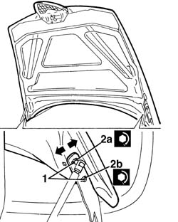
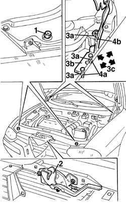

7025A10 bonnet lid - square
- Path
- Procedures > 70 FITTINGS > 7025 COMPARTMENT LIDS > 7025A bonnet lid > 7025A10 bonnet lid - square
- Kind
- repair procedure (removal / refitting; the operation number is the code)
- Applies to
- all engines; all production periods
- Interactive page
- https://sloeber94.github.io/elrnDB-a156/en/#/3238720
Applies to: engines: 1.9 JTD 16v; all production periods
Applies to: all engines; all production periods
Lift the bonnet lid.
1. Loosen the hinge bolts and adjust the position of the bonnet lid.
The arrows indicate possible movements.
2. Tighten the bolts (2a, 2b) to the recommended torque.
 | Fastening | Component | Ø | Value (daNm) |
|---|---|---|---|---|
2a | Upper bolt | BONNET LID | - | 1.5 |
| Fastening | Component | Ø | Value (daNm) |
|---|---|---|---|---|
2b | Lower bolt | BONNET LID | - | 0.9 |

Applies to: all engines; all production periods
1. Adjust buffer blocks if necessary.
2. If necessary adjust the catch position ( 7025A34 bonnet lid lock (one) - r+r or repair ).
If the adjustments described above are insufficient, adjust the position of the bonnet lid hinges as described below.
Carry out op. 7055B42 Additional FRONT WHEEL ARCH (one), left or right - R.R.
3. Slacken the nuts (3a) securing the hinges (3b) and adjust the position until the bonnet is aligned.
Arrows (3c) indicate possible movements.
4. Tighten the nuts (4a, 4b) to the recommended torque.
| Fastening | Component | Ø | Value (daNm) |
|---|---|---|---|---|
4a | Lower nut | BONNET LID HINGES | - | 2.2 - 2.6 |
| Fastening | Component | Ø | Value (daNm) |
|---|---|---|---|---|
4b | Upper nut | BONNET LID HINGES | - | 0.7 - 0.8 |

Applies to: all engines; all production periods
Complete op. 7055B42 Additional FRONT WHEEL ARCH (one), left or right - R.R.
Touch up the paintwork in the hinge area.
Applies to: engines: 1.9 JTD 16v; all production periods
Topics linked from this page (4)
- 7025A12 Engine front sound insulation COVER - R.R.
- 7025A14 Bonnet LID - R.R.
- 7025A34 bonnet lid lock (one) - r+r or repair
- 7055B42 Additional FRONT WHEEL ARCH (one), left or right - R.R.